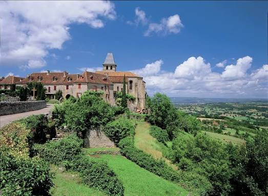

Loubressac


⟹ Plus Beau Village de France ⟸
Mentionné pour la première fois au IXe siècle, Loubressac se présentait alors comme un simple lieu-dit, situé un peu en contrebas du site actuel. Le village prend véritablement son essor lorsque le seigneur Hugues de Rouergue s'y installe et fonde la dynastie des barons de Loubressac, faisant de ce promontoire rocheux une baronnie à part entière.
Point stratégique dominant à la fois les vallées de la Dordogne, de la Cère et de la Bave, Loubressac se dote au XIVe siècle d'un château fort édifié par Adhémar d'Aigrefeuille, maréchal de la cour pontificale, qui devient la résidence des barons du lieu. La même époque voit s'élever l'église Saint-Jean-Baptiste, reconnaissable à son imposant clocher-tour desservi par un escalier en vis.

Le village traverse les troubles des guerres de Religion : en 1572, les troupes protestantes occupent Loubressac et martèlent en partie le portail sculpté de l'église. Remanié aux XVe et XVIIIe siècles, le château conserve néanmoins son caractère défensif d'origine, veillant toujours sur le village depuis son extrémité la plus élevée.
Au XXe siècle, Loubressac séduit le photographe Robert Doisneau, tombé sous le charme de sa lumière alors qu'il descendait la Dordogne en canoë. Fidèle au Lot comme à son Périgord voisin, il y revient régulièrement en vacances et y consacre un reportage photographique. Classé parmi les Plus Beaux Villages de France depuis 1983, Loubressac demeure aujourd'hui l'un des panoramas les plus admirés du département.
Le village actuel résulte d’un déplacement du peuplement : le premier noyau, avec l’ancienne église Saint-Pierre, se trouvait une cinquantaine de mètres plus bas, au lieu-dit de l’Église Basse. Après les destructions de la guerre de Cent Ans, l’habitat se resserre autour du château et de l’église Saint-Jean-Baptiste, à l’abri des fortifications du promontoire.
L’église Saint-Jean-Baptiste conserve plusieurs étapes de cette histoire. Une chapelle castrale est élevée dans la seconde moitié du XIIIe siècle, puis intégrée à l’église construite au XIVe siècle et achevée vers 1520. Son portail sculpté, son tympan figurant notamment un Christ en majesté et son puissant clocher-tour à escalier en vis constituent les principaux repères monumentaux du village.
Loubressac est aussi lié à l’histoire de la photographie : Robert Doisneau découvre la vallée de la Dordogne à la fin des années 1930, y revient après la guerre et séjourne ensuite régulièrement dans le Lot, notamment à Loubressac. Cette présence artistique complète l’image d’un village longtemps admiré pour l’ampleur de son panorama.
Source institutionnelle conseillée : Office de tourisme Vallée de la Dordogne — Loubressac. Cette ressource permet de compléter la visite par des informations patrimoniales, des parcours et des renseignements actualisés.
Château de Castelnau-Bretenoux : imposante forteresse médiévale classée monument historique.
Château de Montal : demeure Renaissance réputée pour son escalier sculpté.
Autoire : cirque de falaises et cascade de 30 mètres, à quelques kilomètres.
Saint-Céré : ville d'art dominée par les tours de Saint-Laurent.